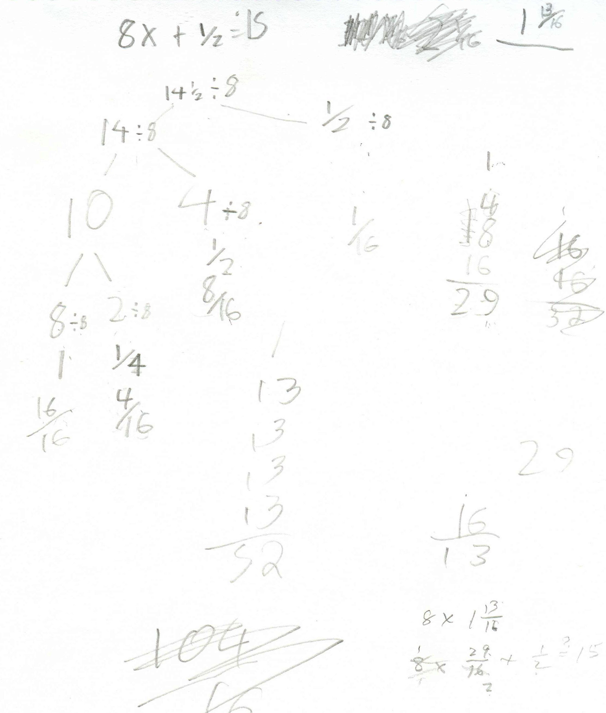

Solving Equations/Chapter 8
The importance of guessing
Don saw a videotape
of Nobel prize-winning Physicist Richard Feynman's lecture about making up a
theory. He said the first thing one needs to do is GUESS
what it should be. His students
giggled at this, but it was very important he said. Then one had to test the
quess, do some experiments, and if it didn't work throw it away! So when Don has
his students guessing to solve equations, he feels confident that he is going in
the right direction.
Besides Feynman
telling us, guessing
is very important, for at least 5 reasons:
1) you start off
right away.
2) it gets you into
the problem, you don't have to have this "I haven't been taught this, so I
can't do it " attitude and then feel you have to wait for someone to tell
you how to solve it.
3) you can solve
many equations this way, not a trivial few, as well as solving other types of
problems. Don't be discouraged if you guess wrong the first few times; keep
trying, you can do it. Along with guessing goes the question-are you getting
closer? Is the guess too big or too small?
4) you'll also get
better at guessing. And
5) you might even come up with different ways to solve the same problem, which would be very good. Then you would have a check to tell you if you are right or not, like when taking a test, and without having to rely on someone else to tell you.
2'x + 3 = 17
What does this mean? We're looking for a number to put in for x so that when we multiply it by 2, then add 3, we should get 17. Notice that the x is not a times sign, it's a variable, holding the place for a number. The dot (') here means multiply.
Let's try 5 in for x,
2'5
+ 3
 =?
17
is 2'5
+ 3 equal to 17? 2'5
= 10
=?
17
is 2'5
+ 3 equal to 17? 2'5
= 10
10 + 3
 =? 17
is 10 + 3 equal to 17?
=? 17
is 10 + 3 equal to 17?
13
 =? 17
is 13 equal to 17 ? No. 13 =17 is
false.
=? 17
is 13 equal to 17 ? No. 13 =17 is
false.
So 5 doesn't work. Is 5 too big or too small? 5 is too small because we get 13 on the left side of the equation, and that's smaller than 17. What shall we try next? 7. OK.
2'7 + 3 =? 17
14 + 3
 =? 17
=? 17
17
 =
17 and this is true.
=
17 and this is true.
So 7 is the number that works, it makes a true statement, 7 is the answer to
2'x + 3 = 17 {7}
Now solve these equations, make these open sentences true:
2) 2'x + 3 = 18
3) 3'x + 5 = 11
4) 3'x + 5 = 12
What could you change if you made up an equation like these?
Make up some equations like these for a friend and have a friend make up some for you. You might want to change one thing at a time to see what happens. See if you can find some patterns. Stay with one variable.Solving equations with x's on both sides..by
guessing:
The rule for substitution says 'in any one open sentence with more
than one of the same variable (x), you have to put the same number in
for each'.
Put a number in for x and make this true: 5x + 4 =
3x + 18

Solve these equations (make them true)
6x + 2 = 3x + 20
8x + 3 = 4x + 23
5x + 4 = 3x + 19
Deryn, age 10, works with Don via IM, from WV
December 2003, Don started working via IM with Deryn , on solving equations like 2x+3 = 13, and with negative numbers, by guessing, and started work on the infinite seriesOn 19 December 2003 Deryn gave Don 3 equations to solve, like those above. For their next session, Don asked Deryn to make up an equation that had no answer, another equation that every number would work, and another equation that would have a negative answer.
Deryn's dad sent this email message to Don after this session:
"Deryn is having a lot of fun with this. Thanks for your help. I'll have her finish the graph from today and I'll send it to you soon". He also sent Don a picture of Deryn for Don's mathroom and the picture below.
9 January 2004 Deryn worked on square numbers which "go up by the odd numbers":

Don saw she could subtract 4 - 5 = -1 using the number line or thermometer, and knew what squaring a number meant, so he had Deryn solve quadratic equations, like x2 - 5x + 6 = 0. She substituted 2 for x in both places, at the left, squared it and did the subtraction 4-10+6=? and -6+6=0 is True, so 2 is an answer. She tried 1 for x, but that ended up with the False statement -4+6=0, so 1 is not an answer. But 3 worked, so 2 and 3 work. Now Don asked her if she could see how these two numbers can get the numbers in the equation.
In the process she used square numbers, negative numbers, subtracting whole numbers to get negative numbers, added negative and positive numbers, used a number line (thermometer) to add the signed numbers, learned how to use the rule for substitution (in an equation with more than one x, the same number has to be substituted into each of the x's), she found patterns (secrets) in finding the 2 answers to each quadratic equation. (How do you get the numbers in the equation 8 and 15 below, when the answers are 3 and 5?
Terrific job Deryn!
The 6 1/2 posed a little problem because Deryn wasn't completely sure of multiplying 3x 3 1/2. But she did fine. Deryn made up x2 - 13x + 4 = 0 for Don, but Don said that this couldn't be. She realized it should be x2 - 13x + 40 = 0 and Don told her the roots were {8,5}. For next time, Deryn was to make up quadratic equations for her Mom and her Dad.
From Deryn's Mom in WV, 2 years later:
Deryn's Dad and I were quite pleased with the work you did with our daughter Deryn in such a short time [via IM]. I think you will be happy to know that she continues to do well in math classes and was a member of her school's Math Counts team this year. That is a pretty impressive turnaround for a kid who hated math more than any other subject! Best wishes.
More on EQUATION SOLVING & links/chapter 8
Don asked Anna (4th grade) if she wanted to try something different (they will go back to the infinite series).
Anna solved equations like: 2x + 3 = 14 {5 1/2}; then Don had her make up some equations. She made up this one: 8x + 1/2 = 15. Anna's answer is at the right below, 1 13/16. Don asked her to explain to him how she figured it out. Anna said she knew that
14 1/2 + 1/2 = 15. She also realized that 8x = 14 1/2, so divided 14 1/2 by 8 to get x. The rest is shown below.

She wrote 14 1/2 as 10 + 4 + 1/2 then 8 + 2 + 4 + 1/2 and then proceeded to divide each piece by 8, changing each of the resulting fractions to 16ths: 16/16 + 4/16 + 8/16 + 1/16 = 29/16= 1 13/16!Don sees his students solve problems in ways that he has never seen, which is exciting! Three times this week he was reminded of this quote:
Sarah, age 7, said to Don unsolicited, after working on an infinite series in Ch. 1: "At school when we do math we use different methods that I am not used to. And they are hard. But if I used my own methods it would be easy."
2x + 3 =17 {7}, 2x + 3 = 18 {7 1/2} , 2x + 3 = 19 {8} and 3x + 5 = 18 {4 1/3}
Jennie solves a cubic equation by iteration
See
Chapter
3 answers where Ian proves that infinity = -1
See chapter 8 for solving equations
Solving the equation x3 = 1 using Mathematica
See also solving the equation x5 = 2 - 2*'*Sqrt(3) or finding the 5 - fifth roots of
2 - 2*'*Sqrt(3) .